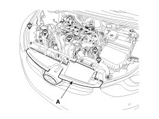
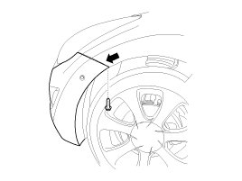
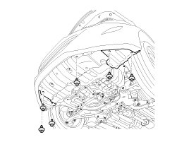
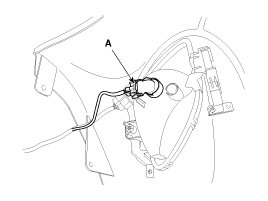

Repair Procedures
Replacement
CAUTION:
- Put on gloves to protect your hands.
- Use a plastic panel removal tool to remove interior trim pieces to protect from marring the surface.
- Take care not to bend or scratch the cover and other parts.
1. Remove the radiator grill upper cover mounting clips.

2. After loosening the front bumper side mounting screw, disconnect the side.

3. Remove the front bumper lower mounting clips.

4. Disconnect the fog lamp connectors (A).
5. Remove the front bumper.

6. Installation is the reverse of removal.
NOTE:
- Replace any damaged clips.
- Make sure the connector is plugged in properly.